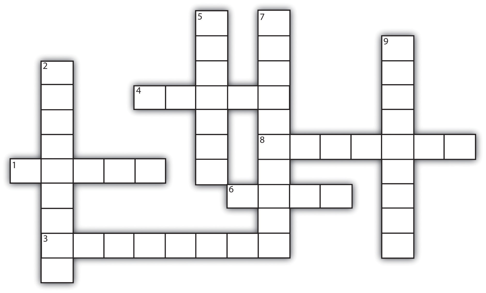

In today’s environment, it is not so critical to “know” a great deal of information. The list above indicates how much information we can easily access. In fact, the abundance of information might be the greater challenge. Your success will depend on what you can do with the information, not just on what you know. How we filter and use that abundance of data is the reason critical thinking has become so important today.
Critical thinkingThe ability to discover the value of an idea, a set of beliefs, a claim, or an argument. It requires you to use logic and reasoning to evaluate evidence or information to make a decision or reach a conclusion. is the ability to discover the value of an idea, a set of beliefs, a claim, or an argument. It requires you to use logic and reasoning to evaluate evidence or information to make a decision or reach a conclusion. Critical thinking is
Critical thinking is a part of everyday life, too. Decisions you make can have a lasting impact on your life, and these decisions benefit from critical thinking. Did you ever decide to quit smoking or to lose weight? Were you successful? How did you decide to attend the college you are in? Was that the right choice for you? In any of these cases, could you have made a better decision if you had better or more information?
The critical thinking process is really nothing more than asking the right questions to understand a problem or issue and then gathering the data you need to complete the decision or take sides on an issue.
What is the problem or issue I am considering really about? Understanding this is key to successful critical thinking. What is the objective? A position? A decision? Are you deciding what candidate in an election will do a better overall job, or are you looking to strengthen the political support for a particular cause? Are you really against a recommendation from your dad, or are you using the issue to establish your independence?
Do you understand the terms related to the issue? Are you in agreement with the proponent’s definitions? For example, if you are evaluating a quotation on the health-care system for use in a paper, your objective might be to decide to use the quotation or not, but before you can make that decision you need to understand what the writer is really saying. If a term like “family” is used, for example, does it mean direct relations or extended family?
What are my options? What are choices that are available to you (if you are making a decision), or what are the “sides” (in the case of a position) you might choose to agree with? What are their differences? What are the likely consequences of each option? In making a decision, it might be helpful to ask yourself, “What is the worst thing that might happen in each scenario?” Examining different points of view is very important; there may be dozens of alternative viewpoints to a particular issue—and the validity of each can change depending on circumstances. A position that is popular or politically correct today may not have been a year ago, and there is no guarantee it will be right in the future. Likewise, a solution to a personal problem that was successful for your roommate may not apply to you. Remember also that sometimes the best option might be a combination of the options you identify initially.
What do I know about each option? First, make sure you have all the information about each option. Do you have all the information to support each of your likely options? What is still missing? Where can you get the information you need? Keep an open mind and don’t dismiss supporting information on any position before you evaluate it carefully.
How good is my information? Now it’s time to evaluate the quality of the support of each option or point of view. Evaluate the strengths and the weaknesses of each piece of supporting evidence. Are all the relevant facts presented? Are some facts presented in misleading ways? Are enough examples presented to support the premise? Consider the source of the supporting information. Who is the expert presenting the facts? That “expert” may have a vested interest in the position. Consider that biasA personal inclination that may prevent unprejudiced consideration of a question., more for understanding the point of view than for rejecting it. Consider your own opinions (especially when working with emotional issues); are your emotional ties to a point of view getting in your way of clear thinking (your own biases)? If you really like a particular car model, are you giving the financial implications of buying that car a fair consideration? Are there any errors or fallacies in your logic? (See Table 3.2 "Fallacies and How to Avoid Them".)
FallaciesDefects in logic that weaken arguments. are defects in logic that weaken arguments. You should learn to identify them in your own thinking so you can strengthen your positions, as well as in the arguments of others when evaluating their strength.
Table 3.2 Fallacies and How to Avoid Them
| Fallacy | Description | Examples | How to Avoid It in Your Own Thinking |
|---|---|---|---|
| Generalizations | Making assumptions about a whole group of people based on an inadequate sample. |
Engineering students are nerds. My economics class is boring, and my friend says her economic class is boring, too—therefore all economics classes are boring. |
What kind of sample are you using? Is it large enough to support the conclusions? You may want to increase your sample size or draw a more modest conclusion by using the word “some” or “many.” |
| False Cause | Drawing improper conclusions through sequencing. If A comes before B, then A causes B. | I studied biology last term, and this term I’m taking organic chem, which is very confusing. Biology makes chemistry confusing. | When making causal statements, be sure you can explain the process through which A causes B beyond their mere sequence. |
| Personalizations | Also known by their Latin names (ad hominem, or “against the man,” and tu quoque, or “you too”). Inserting personalities inappropriately into an argument. Common in political arguments. | Against the man: I won’t support Senator Smith’s education bill. He’s had a mistress and marital problems. | Focus on the merits and supporting data of an argument, not on the personality or behavior of the people making the arguments. |
| Everyone Does It | Also known by its Latin name (ad populum, or “against many”). Justifying an issue based solely on the number of people involved. |
You too: A parent explains the evidence of the risks of binge drinking. The child rejects the arguments, saying, “When you were my age, you drank too.” It’s healthy to drink only soda; millions of American kids do. |
The popular position is not always the right one. Be wary of arguments that rely exclusively on one set of numbers. |
| Appealing to Authority | Using an endorsement from someone as a primary reason for supporting a point of view. |
We should oppose higher taxes; Curt Schilling does. Pitcher Curt Schilling may be a credible authority on baseball, but is he an authority on taxes? |
Quoting authorities is a valuable tool to build an argument; make sure the authorities you quote are truly subject matter experts on the issue you are discussing. |
| Weak Analogy | Using irrelevant similarities in two objects to draw a conclusion. | Cars and motorcycles are both driven at high speeds on the highway. Car drivers aren’t required to wear helmets, so motorcycle riders shouldn’t have to either. | You can draw an analogy between just about any two objects or ideas. If you are using an analogy, make sure you identify the properties relevant to the argument you are making and see if both share those properties. (In the example, the motorcycle does not provide protection to the rider, but the car does. Equating the two vehicles based on traveling speed is not relevant to the argument.) |
| False Dichotomy | Setting up a situation in which it looks like there are only two possible options. If one option is discredited, the other must be accepted. | The classic example here is “America, love it or leave it.” | Examine your own thinking. Are there really only two options? Look for the third option. If you were asked to develop a compromise between the two positions, what would it look like? What would its strengths and weaknesses be? |
You will need to use critical thinking throughout your college years and beyond. Here are some common critical thinking situations and the kinds of questions you should ask to apply critical thinking. Note that critical thinking is central to themes covered in detail throughout this book.
Answer three questions about your supporting data:
Create a set of criteria you will use to evaluate the strength of information you want to use to support your argument. Ask questions like these:
One of the most consistent uses for critical thinking in your college work is in considering the value of research material and deciding how to use it. The Internet gives you access to an almost unlimited amount of data, and you must choose what to use carefully. Following are some guidelines.
Based on what you learned, ask yourself if the information from this Web site is reliable for your needs. These steps are covered in more detail in Chapter 5 "Reading to Learn".
Three questions to ask about the support for an argument or position:
Figure 3.3 Crossword: Full of Fallacies
| Across | Down |
|---|---|
| 1. Fallacy is an error in _____________. | 2. Appealing to _______________ |
| 3. Also known as the “you too” fallacy | 5. Ad ______________; everybody does it |
| 4. False ________; a fallacy based on the order of events | 7. To draw conclusions based on a small sample |
| 6. A tendency or inclination which prevents fair consideration of a point of view | 9. False ________; a fallacy on forced choice between only two options |
| 8. Weak ______________; irrelevant comparison |